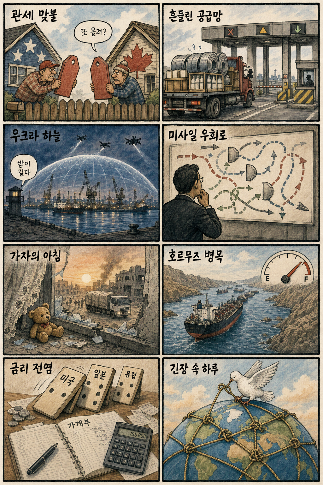
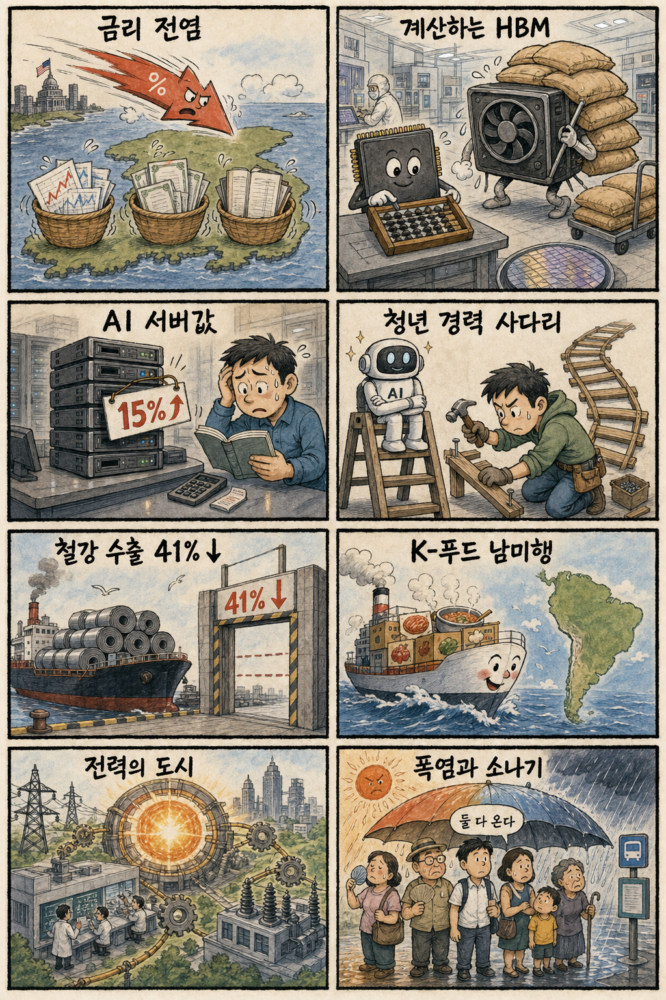

01
마벨 · 252.39→237.04달러 · -6.08%
내용요약 맞춤형 AI 반도체 설계주 마벨이 시가 대비 6.08% 급락해 조사 대상 중 낙폭이 가장 컸습니다.
예상여파 국내 AI 반도체 설계·패키징 연결주에는 월요일 단기 심리 부담이 될 수 있습니다.
MORNING_BRIEFING_20260824
작성 시각: 2026-08-24 06:39 KST · 직전 미국 정규장과 2026-08-24 KST 당일 공개 기사 기준
직전 미국 정규장인 8월 21일에는 저가매수 유입으로 다우 +0.98%, S&P 500 +0.43%, 나스닥 +0.44%를 기록했습니다. 테슬라와 팔란티어는 시가 대비 각각 +3.75%, +3.43%였지만 마벨 -6.08%, 인텔 -2.91%, 어플라이드 머티리얼즈 -2.22%로 반도체는 약했습니다. 오늘 한국 증시는 미국 지수 반등의 완충 효과와 장기금리 상승, 반도체 내부 차별화, 미·캐나다 관세 충돌을 함께 가격에 반영할 가능성이 큽니다.
| 지수 | 종가 | 등락률 | 한국 증시 시사점 |
|---|---|---|---|
| 다우존스 | 53,277.01 | +0.98% | 경기민감 심리 회복 |
| S&P 500 | 7,674.37 | +0.43% | 저가매수 유입 |
| 나스닥 종합 | 26,180.46 | +0.44% | 지수 반등·반도체 혼조 |
직전 정규장은 +0.43~+0.98% 올랐습니다.
해외 금리 상승이 국내 성장주·채권·대출에 전염될 수 있습니다.
AI 메모리 기대와 미국 장비·설계주 약세가 맞섭니다.
검증 문턱을 통과한 후보가 없어 현금 관망합니다.
8월 23일 보고서는 일요일 국내 증시 휴장으로 공식 추천을 내지 않았습니다. 게시 당시 판단은 그대로 유지되며 사후 종목을 추가하지 않습니다.
| 시장 | 종가 | 등락률 | 해석 |
|---|---|---|---|
| KOSPI | 6,912.95 | +0.88% | 21일 시가 대비 +2.26% |
| KOSDAQ | 801.94 | -4.63% | 21일 시가 대비 -2.68% |
| 다우존스 | 53,277.01 | +0.98% | 경기민감 반등 |
| S&P 500 | 7,674.37 | +0.43% | 저가매수 유입 |
| 나스닥 | 26,180.46 | +0.44% | 반도체는 혼조 |
테슬라는 직전 장 시가 대비 +3.75%였습니다.
팔란티어는 시가 대비 +3.43%였습니다.
마벨 -6.08%, 엔비디아 -1.69%였습니다.
어플라이드 머티리얼즈는 -2.22%였습니다.
내용요약 맞춤형 AI 반도체 설계주 마벨이 시가 대비 6.08% 급락해 조사 대상 중 낙폭이 가장 컸습니다.
예상여파 국내 AI 반도체 설계·패키징 연결주에는 월요일 단기 심리 부담이 될 수 있습니다.
내용요약 전일 약세 뒤 저가매수가 유입되며 시가 대비 3.75% 반등했습니다.
예상여파 미국 성장주 위험선호 회복 신호지만 국내 2차전지는 KOSDAQ 수급을 별도로 봐야 합니다.
내용요약 AI 소프트웨어 수요 기대 속에서 시가 대비 3.43% 상승했습니다.
예상여파 국내 AI 소프트웨어 심리에는 긍정적이나 실적 검증 없는 추격은 피해야 합니다.
내용요약 미국 지수 반등에도 시가 대비 2.91% 하락하며 반도체 약세가 이어졌습니다.
예상여파 반도체 내부의 실적·공정 경쟁력 차별화가 국내 대형주와 소부장에도 영향을 줄 수 있습니다.
내용요약 반도체 장비주가 시가 대비 2.22% 하락해 나스닥 반등에서 소외됐습니다.
예상여파 국내 장비주는 실제 수주와 다음 주 주요 실적을 확인하기 전 기대만으로 추격하지 않는 편이 안전합니다.
미국 3대 지수 반등은 개장 초 위험선호를 받칠 수 있지만 마벨·인텔·반도체 장비주의 약세와 글로벌 장기금리 상승은 성장주 추격에 부담입니다. 미·캐나다 보복관세는 철강·자동차·식품 공급망의 비용 변수이며, AI 서버 가격 인상과 aHBM 뉴스는 메모리 기대를 높이되 단기 과열을 키울 수 있습니다. 금요일 KOSPI +0.88%와 KOSDAQ -4.63%의 격차가 컸던 만큼 시초가 방향보다 외국인 현·선물 수급, 원화, KOSDAQ 안정 여부를 먼저 확인합니다.
오늘은 추천 없음 — 현금 관망
전일까지의 외국인·기관 수급, 컨센서스 변화, 30건 이상 유사 조건 확률 보정, 예상 손익비 1.5 이상을 동시에 검증한 종목이 없습니다. 따라서 종합점수와 상승확률을 임의로 만들지 않습니다.
관심 연결종목 대형 반도체·전력기기·철강·방산은 뉴스 연결 관찰 대상일 뿐 매수 추천이 아닙니다. 장전 예상 갭이 큰 종목은 추격매수 금지이며 개장 후 수급 확인 전 진입을 피합니다.
미국 반등이 실제 국내 매수로 연결되는지 봅니다.
성장주 할인율과 원화·국고채의 동반 움직임을 확인합니다.
메모리 기대와 서버 가격 상승, 고객 지출을 함께 봅니다.
전력 피크와 교통·시설물 위험에 동시에 대비합니다.
핵심 요약: AI 데이터센터의 전력 소비와 서버 가격이 빠르게 오르는 가운데, 연산 기능을 더한 aHBM과 SMR이 병목 해소 기술로 부상했습니다. 오픈AI의 규제 입장 변화는 안전 기준 경쟁도 기술 경쟁만큼 중요해졌음을 보여줍니다.
내용요약 AI 데이터센터의 세계 전력 소비가 2030년 945TWh에 이를 수 있어 노후 전력망과 공급 부족이 핵심 제약으로 떠올랐다는 보도입니다.
예상여파 발전원뿐 아니라 송배전망·변압기·냉각 설비 투자가 함께 늘 수 있지만 인허가와 전기요금 부담이 사업 속도를 좌우할 수 있습니다.
내용요약 엔비디아가 AI 모델 개발로 사업 범위를 넓히는 동시에 메모리 등 원가 상승을 반영해 서버 가격 인상을 예고했다는 보도입니다.
예상여파 AI 인프라 수요는 유지돼도 고객사의 투자비가 커지며 메모리 공급사에는 기회, 클라우드·스타트업에는 비용 부담이 될 수 있습니다.
내용요약 삼성전자가 메모리 내부에서 일부 연산을 처리해 GPU 부담을 줄이는 aHBM 기술을 공개했다는 보도입니다.
예상여파 검증과 양산이 이어지면 AI칩 병목 완화와 고부가 메모리 경쟁에 도움이 되지만 고객 채택 시점이 관건입니다.
내용요약 AI 데이터센터 전력난의 대안으로 소형모듈원전이 산업단지와 공장 인근의 분산 전원으로 주목받는다는 기사입니다.
예상여파 전력 안정성 개선 기대가 있지만 안전성 검증, 주민 수용성, 건설비와 규제 일정이 실제 도입 속도를 가를 수 있습니다.
내용요약 주별 AI 규제에 반대하던 오픈AI가 캘리포니아 고위험 AI 규제의 관리 장치를 강화하자고 입장을 바꿨다는 보도입니다.
예상여파 모델 평가·사고 보고 의무가 확대되면 개발비는 늘지만 안전 기준의 예측 가능성과 이용자 신뢰는 높아질 수 있습니다.
핵심 요약: 미국·캐나다 관세 충돌이 북미 공급망을 흔들고, 우크라이나 방공 지원 논의와 영국·러시아 외교 공백이 유럽 안보 긴장을 높이고 있습니다. 가자지구의 인도적 위기와 에너지 가격 통제의 재정 부담도 이어집니다.
내용요약 미국과 캐나다가 고율 관세와 보복 조치를 주고받으며 북미 무역 갈등이 격화됐다는 보도입니다.
예상여파 철강·자동차·식품 공급망의 비용과 주문 불확실성이 커져 한국 기업도 현지 조달과 우회 수출 규정을 점검해야 합니다.
내용요약 마이크 펜스 전 미국 부통령이 한국산 요격미사일을 미국에 제공한 뒤 우크라이나에 배치하는 구상을 주장했다는 보도입니다.
예상여파 공식 정책이 아닌 제안 단계지만 방산 공급망과 한국의 외교·안보 부담을 둘러싼 논쟁이 커질 수 있습니다.
내용요약 이스라엘의 가자지구 공습으로 아동을 포함한 민간인 사망자가 발생했고 공격 확대 경고가 나왔다는 보도입니다.
예상여파 인도적 위기가 심화하고 휴전 협상이 어려워지면 중동 위험 프리미엄과 국제사회의 외교 압박이 높아질 수 있습니다.
내용요약 영국의 러시아 대사 소환 이후 양국 외교 공백이 한 달째 이어지며 관계 단절 우려가 커졌다는 보도입니다.
예상여파 외교 채널 약화는 우크라이나 전쟁 관련 오판 위험과 유럽 안보 불확실성을 키울 수 있습니다.
내용요약 일본의 석유 최고가격제가 다섯 달 넘게 물가를 낮췄지만 정부 재정 부담을 키우고 있다는 보도입니다.
예상여파 에너지 보조금 장기화는 소비자물가를 완충해도 재정 건전성과 시장가격 왜곡 문제를 남길 수 있습니다.

핵심 요약: 해외 장기금리 상승이 국내 금융시장과 대출로 번질 가능성이 커진 가운데, aHBM은 반도체 기술 기대를 높였습니다. 청년 일자리 감소와 대EU 철강 수출 급감은 구조적 부담이며 폭염과 강한 소나기도 당일 생활·전력 변수입니다.
내용요약 미국·일본·유럽의 장기금리가 함께 오르며 국내 주식·채권·대출금리로 충격이 전해지는 경로를 짚은 기사입니다.
예상여파 외국인 자금과 성장주 할인율, 가계 이자 부담이 동시에 민감해져 원화와 국고채 금리를 함께 봐야 합니다.
내용요약 삼성전자가 메모리 내부에서 일부 연산을 처리해 GPU 부담을 줄이는 aHBM 기술을 공개했다는 보도입니다.
예상여파 검증과 양산이 이어지면 AI칩 병목 완화와 고부가 메모리 경쟁에 도움이 되지만 고객 채택 시점이 관건입니다.
내용요약 청년 일자리가 줄어든 가운데 AI 자동화가 초급 업무를 대체해 경력 진입 사다리가 약해질 수 있다는 분석입니다.
예상여파 직무 전환 교육과 현장형 초급 채용이 늦어지면 청년 소득과 소비, 장기 숙련 형성에 부담이 될 수 있습니다.
내용요약 유럽연합의 수입 쿼터 축소 영향으로 한국의 대EU 철강 수출이 41% 감소했다는 보도입니다.
예상여파 철강사의 물량 재배치와 가격 압박이 커지고 자동차·조선 등 연관 산업의 현지 조달 전략도 중요해질 수 있습니다.
내용요약 전국 낮 기온이 최고 36도까지 오르고 곳곳에 강한 소나기가 예상된다는 당일 기상 보도입니다.
예상여파 온열질환과 전력 피크를 관리하면서 국지성 호우에 따른 교통·시설물 피해도 함께 대비해야 합니다.
